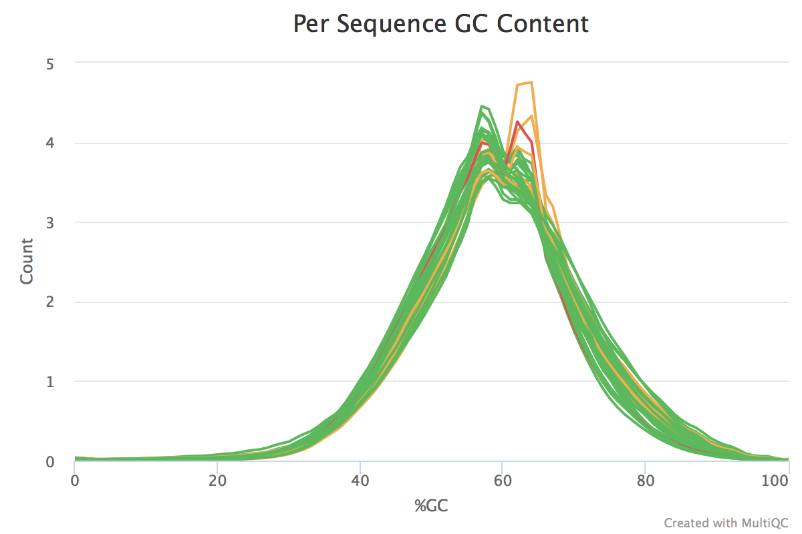
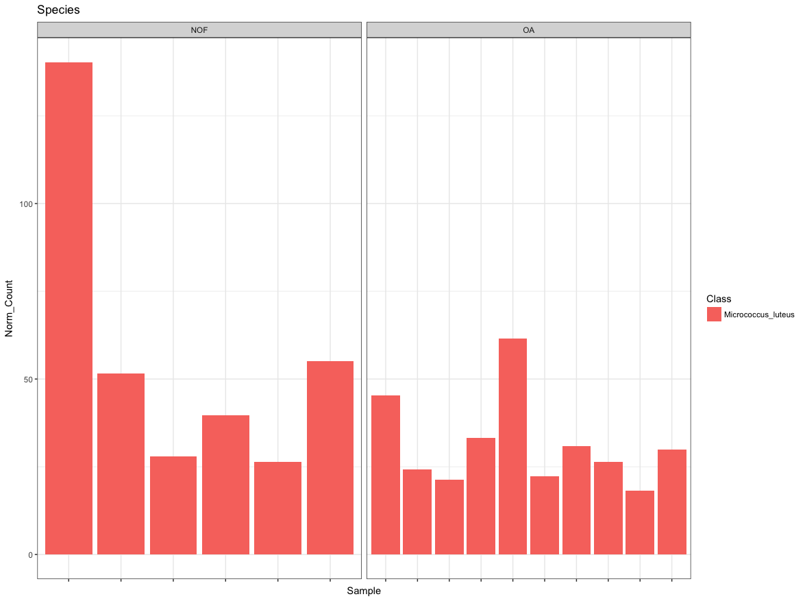

Andrew Skelton
2nd August 2017
#!/bin/bash
for i in ../raw_data/*R1*; do
filename=$(basename "$i")
filename="${filename%.*}"
filename="${filename%.*}"
filename="${filename%.*}"
trim_galore --paired --illumina --phred64 -o ../trimming/ \
../raw_data/${filename}.R1.fastq.gz \
../raw_data/${filename}.R2.fastq.gz &
donefor i in ../trimming/*.fq.gz; do
fastqc -o ../fastqc/trimmed ${i} &
done
wait
multiqc ../fastqc/trimmed/
# Variables
KRAKEN=/home/andrew/2016May_RNASeq_David/Alignment_STAR/Unmapped/kraken/kraken_install/kraken
KRAKEN_T=/home/andrew/2016May_RNASeq_David/Alignment_STAR/Unmapped/kraken/kraken_install/kraken-translate
KRAKEN_DB=/home/andrew/2016May_RNASeq_David/Alignment_STAR/Unmapped/kraken/minikraken_20141208
INDIR=/home/andrew/2016May_RNASeq_David/Alignment_STAR/Unmapped/trimming
OUTDIR=/home/andrew/2016May_RNASeq_David/Alignment_STAR/Unmapped/kraken/kraken_out/
# Loop through forward read files
for i in ../trimming/*R1*.gz; do
# Get sample name
filename=$(basename "$i")
filename="${filename%.*}"
filename="${filename%.*}"
filename="${filename%.*}"
# Run Kraken
$KRAKEN --db $KRAKEN_DB --threads 10 --fastq-input --gzip-compressed --quick \
--output ${OUTDIR}/${filename}.kraken \
--paired ${INDIR}/${filename}.R1_val_1.fq.gz \
${INDIR}/${filename}.R2_val_2.fq.gz
# Get Classified Entries
grep "^C" ${OUTDIR}/${filename}.kraken > ${OUTDIR}/${filename}.classified.kraken
# Annotate records with taxa info
$KRAKEN_T --mpa-format \
--db $KRAKEN_DB ${OUTDIR}/${filename}.classified.kraken > \
${OUTDIR}/${filename}.classified.kraken.mpa
done| Reads | Classified | Proportion |
|---|---|---|
| 1,162,956 | 9659 | 0.83% |
| 1,193,058 | 10482 | 0.88% |
| 1,797,999 | 11326 | 0.63% |
| 1,686,084 | 10406 | 0.62% |
| 1,475,108 | 11674 | 0.79% |
| 1,146,232 | 12124 | 1.06% |
| 1,231,947 | 14295 | 1.16% |
| 1,061,730 | 17620 | 1.66% |
| 1,314,030 | 11385 | 0.87% |
| 1,740,879 | 17101 | 0.98% |
| 1,895,157 | 13527 | 0.71% |
| 2,780,420 | 15333 | 0.55% |
| 1,647,065 | 13347 | 0.81% |
| 1,679,619 | 12112 | 0.72% |
| 1,309,555 | 14893 | 1.14% |
| 978,411 | 12996 | 1.33% |
pheno <- read_tsv("NOF_OA_Pheno_Table.txt")
Kingdom <- c(); Phylum <- c(); Class <- c(); Order <- c();
Family <- c(); Genus <- c(); Species <- c();
files.in <- list.files("kraken_out/", pattern = "*.mpa", full.names = T)
names(files.in) <- files.in %>% basename %>% gsub("[.].*$","",.)
for(i in 1:length(files.in)) {
kraken.results <- read_tsv(files.in[i], col_names = F)
kraken.list <- kraken.results$X2 %>% strsplit(split = "|", fixed = T)
kraken.df <- stringi::stri_list2matrix(kraken.list) %>% t %>% as.data.frame %>%
mutate_all(funs(gsub("^.__", "", .)))
colnames(kraken.df) <- c("Kingdom","Phylum","Class","Order","Family","Genus","Species")
}for(j in colnames(kraken.df)) {
lib.size <- kraken.df[[j]] %>% na.omit %>% length
tmp.class <- kraken.df[[j]] %>% na.omit %>% table %>% #{./{lib.size}*100} %>%
as.data.frame %>% setNames(c(j, names(files.in)[i]))
eval(parse(text = paste0("tmp.master <- ", j)))
if(is.null(tmp.master)) {
tmp.out <- tmp.class
} else {
tmp.out <- tmp.master %>% full_join(tmp.class)
}
eval(parse(text = paste0(j, " <- tmp.out")))
}variables.in <- c("Kingdom","Phylum","Class","Order","Family","Genus","Species")
for(i in variables.in) {
eval(parse(text = paste0("tmp.df <- ", i)))
tmp.df[is.na(tmp.df)] <- 0
tmp.th <- tmp.df %>% unique %>% {ifelse(length(.) < 10, length(.), 10)}
tmp.df.matr <- tmp.df[,-1] %>% as.matrix
rownames(tmp.df.matr) <- tmp.df[[1]]
if(nrow(tmp.df.matr) > 50) {
dds <- DESeqDataSetFromMatrix(tmp.df.matr, colData = pheno, design = ~ SampleType)
dds <- DESeq(dds)
res <- results(dds) %>% as.data.frame %>% add_rownames("Feature") %>%
filter(pvalue < 0.1, baseMean > 10, abs(log2FoldChange) > 0.6 )
if(nrow(res) > 0) { print(res); print(i) }
}
}
centrifuge -q --phred64 -p 8 --seed 73 \
-S Flowcell_A_1.centrifuge.out \
-x Index/p+h+v/p+h+v \
-1 data_in/Flowcell_A_1.unmapped.R1_val_1.fq.gz \
-2 data_in/Flowcell_A_1.unmapped.R2_val_2.fq.gz| name | taxI | D taxRank | genomeSi | ze numRea | ds numUniqueR | eads abundance |
|---|---|---|---|---|---|---|
| Bacteria 2 supe | rkingd | om 0 1 | 0 0.0 | |||
| Cellulomonas gilvus | 11 sp | ecies 3526441 | 1 0 0.0 | |||
| Phenylobacterium | 20 ge | nus 4379231 | 1 0 0.0 | |||
| Shewanella 22 genu | s 51 | 40018 1 1 | 0.0 | |||
| Myxococcales 29 | order | 9744470 1 | 0 0.0 | |||
| Archangium gephyra | 48 sp | ecies 1248943 | 2 6 4 | 0.0 | ||
| Chondromyces crocatu | s 52 | species 113 | 88132 4 | 1 0.0 | ||
| Sorangium cellulosum | 56 | species 139 | 07952 2 | 0 0.0 | ||
| Lysobacter 68 genu | s 0 | 5 0 0.0 |